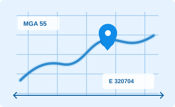

Web coordinate tool
Australian Coordinate Converter
Convert between geographic coordinates and projected grids used in Australia, including GDA2020 / MGA, GDA94 / MGA and WGS84 / UTM.

Version 2 single pointResult
E/N: 3 decimals, Lat/Long: 8 decimalsEnter a coordinate and choose Convert.
What is latitude and longitude?
Latitude and longitude are geographic coordinates measured in degrees. They are not projected metre based coordinates. They can belong to WGS84, GDA2020, GDA94 or another geographic CRS.
What is MGA?
MGA is the Map Grid of Australia. It is a metre based projected grid used with Australian datums such as GDA2020 and GDA94.
What is UTM?
UTM is the Universal Transverse Mercator grid. It is a metre based projected grid divided into zones. In this tool, UTM means WGS84 / UTM unless another datum is explicitly stated.